Running Stata and Bash Jobs#
Run Stata in one of three ways. Open the Stata window on a shared KLC node through KLC OnDemand. Run a do-file from the command line on KLC main inside tmux. Submit the same do-file to KLC Reserve with sbatch when the job needs exclusive memory or should continue after you log out.
A bash script uses the two command-line paths. On KLC Reserve, set the core count in the job script.
Command-line Stata uses one module on both KLC main and KLC Reserve:
module load stata/17
Choose a Way to Run#
Stata GUI |
KLC main |
KLC Reserve |
|
|---|---|---|---|
How you start |
Launch KLC GNOME Desktop, then run |
Log in and run the command in |
Submit a script with |
Cores |
Shared with other users; |
Shared with other users; 24 cores at normal priority per user |
Reserved for your job |
Memory |
Shared on the node |
Shared on the node |
Set a guesstimate with |
Connection |
Reconnect from My Interactive Sessions |
Keep the session alive with |
The job continues after you log out |
Stata results |
Results window |
|
|
Shell log |
The desktop terminal |
|
|
Use the Stata GUI when you want the Stata window. Use KLC main for a do-file or bash script that fits in the shared 24-core limit. Use KLC Reserve when the job needs exclusive memory, or when you want it to run after you log out without a tmux session.
Stata Executables#
After module load stata/17, the executable sets the core count:
Executable |
Interface |
Cores |
|---|---|---|
|
Command line |
4 |
|
Command line |
1 |
|
Graphical |
4 |
|
Graphical |
1 |
stata-mp and xstata-mp use 4 cores. A larger core request leaves that limit unchanged. For a bash script, set --cpus-per-task and --mem to what that task needs.
Run the Stata GUI on KLC OnDemand#
Launch KLC GNOME Desktop from KLC OnDemand, then start xstata-mp in a terminal on that desktop. The desktop runs on a shared KLC login node. It is a direct-access session, so set Wall Clock Time to the hours you need. The screenshots below use KLC node 0303; choose a node from the live availability table.
Open Quest OnDemand and log in with your NetID.
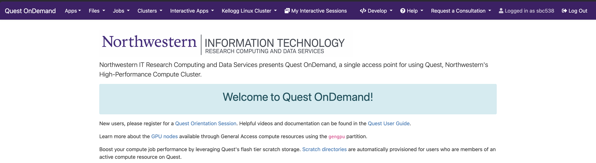
From the top navigation bar, select Help → Kellogg Linux Cluster.
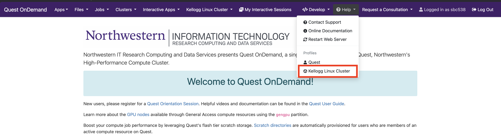
On the KLC landing page, read KLC Direct Access Resource Availability and choose a node with available CPU cores and RAM.
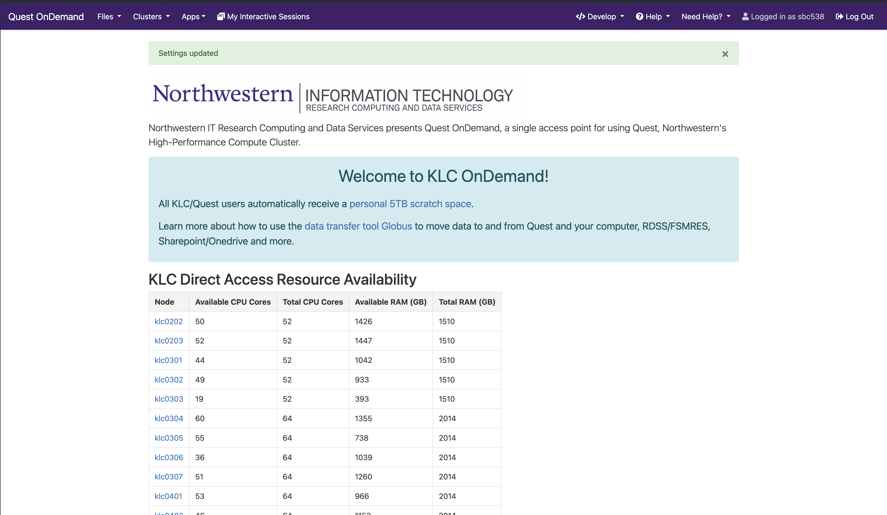
Under Pinned Apps, select KLC GNOME Desktop.
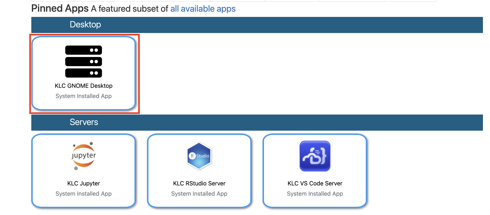
Set Cluster to the node you chose, set Wall Clock Time in hours, and click Launch.
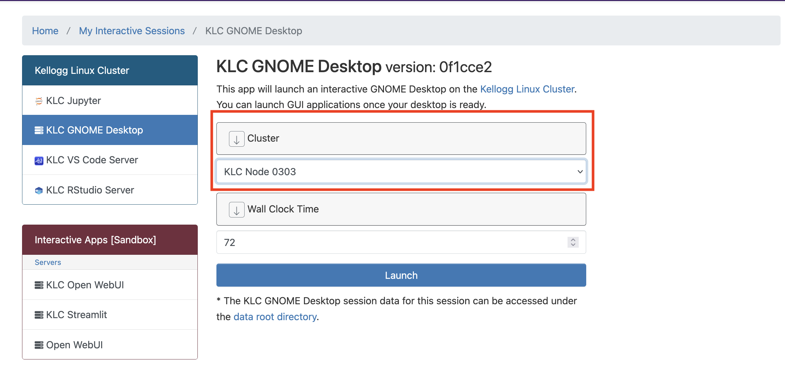
On My Interactive Sessions, wait until the session leaves Starting. Startup takes a few minutes.
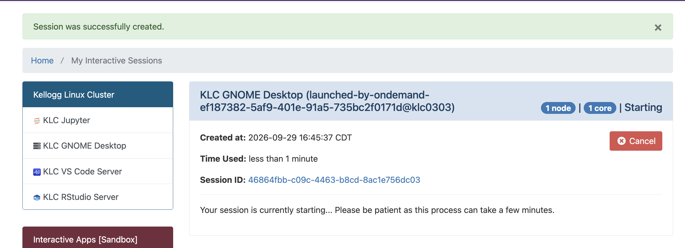
When the status is Running, click Launch KLC GNOME Desktop. The card names the host. In this example the host is
klc0303.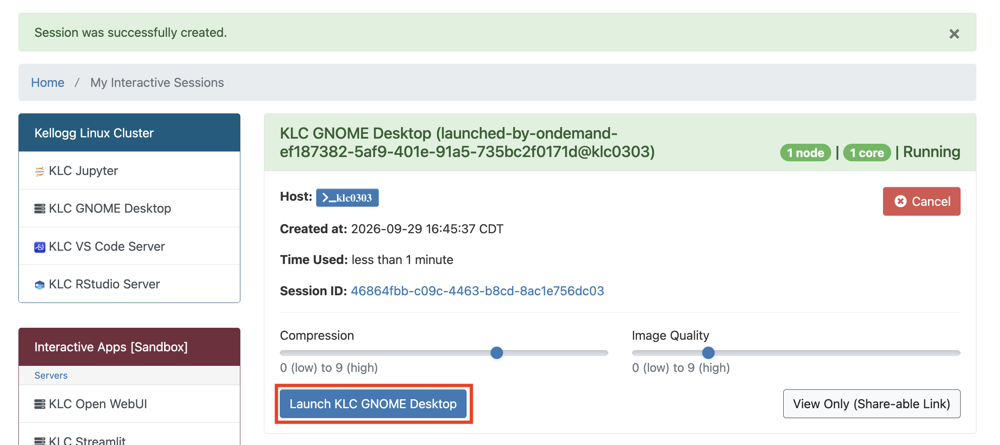
On the desktop, click Activities.
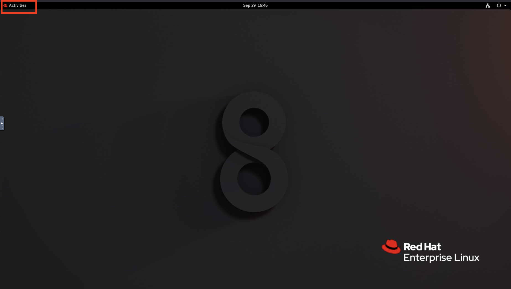
Click the terminal icon in the dock.
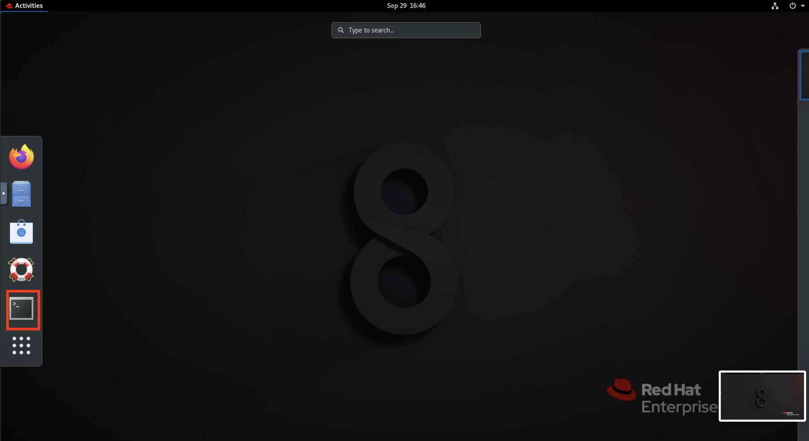
In the terminal, change to the project directory, load Stata, and open the GUI. The terminal in the screenshot is still in the home directory; enter the
cdcommand first so do-files and data stay out of the 80 GB home directory.cd /kellogg/proj/<your-netid>/project module load stata/17 xstata-mp
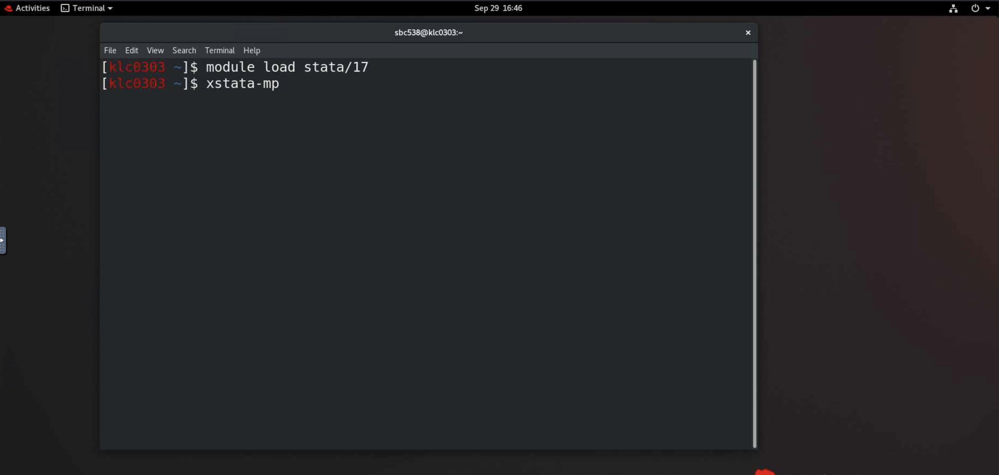
Stata/MP opens in its own window.
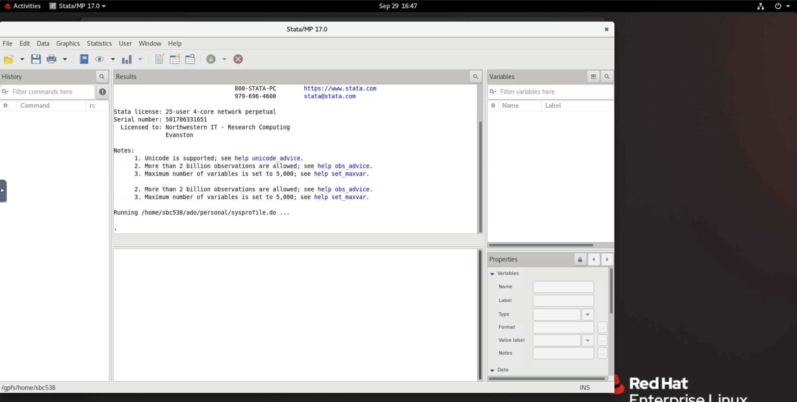
Note
The session card reports 1 core. That count describes the desktop session on a shared login node. xstata-mp still uses up to 4 cores, and those cores count toward the 24-core normal-priority limit per user.
Results from the GUI appear in the Results window. Batch mode, covered below, writes analysis.log instead. For a 1-core graphical session, run xstata-se in place of xstata-mp.
Reconnect to the desktop, or cancel it when you are finished, from My Interactive Sessions. See KLC OnDemand for session timing and the file manager.
Where to Store Files#
Put the do-file, bash script, data, and logs in your project directory:
/kellogg/proj/<your-netid>/
The home directory quota is 80 GB. Leave job output out of /home/<your-netid>/.
How Logs Are Created#
Each command-line run produces two records. They are different files.
Stata results. Batch mode writes a log named after the do-file, in the directory where you launch Stata. This command:
stata-mp -b do analysis.do
creates analysis.log in the current directory. That file holds the do-file output. stata-se -b do analysis.do does the same thing on 1 core. Batch mode keeps the do-file output in that .log file, so the terminal stays quiet.
Shell log. This file records the surrounding command: module loads, bash output, and errors from the job step.
On KLC main, append the terminal stream to a file with
tee.On KLC Reserve, SLURM writes it to the path in
#SBATCH --output.
Read analysis.log for Stata results. Read the shell log for everything around the Stata command. For a bash script, the shell log is the record of the script, because bash writes its output to that stream.
Warning
Create the log directory before you submit a KLC Reserve job. A missing directory leaves the #SBATCH --output file empty.
mkdir -p /kellogg/proj/<your-netid>/logs
Run on KLC Main#
Log in to a KLC node and run the job in tmux. stata-mp uses 4 cores and stata-se uses 1 core, with no separate resource request. Memory is shared with everyone else on that node. Each user has 24 cores at normal priority across KLC nodes; several stata-mp jobs at once count toward that total.
Warning
A tmux session stays on the node where you created it. To reattach, SSH to that same node. See Using tmux for detach, reattach, and other session commands.
Stata Do-File#
Log in:
ssh <your-netid>@klc0305.quest.northwestern.eduGo to the project directory and start a named session:
cd /kellogg/proj/<your-netid>/project tmux new -s stata-job
Load Stata and run the do-file. Use
stata-mpfor 4 cores:mkdir -p logs module load stata/17 stata-mp -b do analysis.do
Use
stata-sefor 1 core:stata-se -b do analysis.do
Detach and leave the job running: press
Ctrl+b, thend.Reattach later from the same node:
tmux attach -t stata-job
Results are in analysis.log in the project directory. To keep a shell log as well, run the command this way:
stata-mp -b do analysis.do 2>&1 | tee -a logs/stata-shell.log
logs/stata-shell.log records the shell. The estimation output remains in analysis.log.
To see memory in use on the node while you are logged in, run free -h.
Bash Command#
Use the same tmux session. Append stdout and stderr to a log file:
cd /kellogg/proj/<your-netid>/project
mkdir -p logs
bash run_task.sh 2>&1 | tee -a logs/run_task.log
Detach with Ctrl+b, then d. The script keeps running, and logs/run_task.log remains after the session ends. Follow the file from another window with:
tail -f logs/run_task.log
Run on KLC Reserve#
Submit from any KLC node. The job runs on the kellogg partition and keeps the cores and memory you request for the length of the job. The maximum wall time is 48 hours. If you omit --mem, the partition assigns 3 GB per core. Set --mem to a guesstimate of peak use (for example 32G or 64G).
Stata is one process that uses extra cores as threads. Set --ntasks=1 and put the core count in --cpus-per-task: 4 for stata-mp, 1 for stata-se.
For partitions, monitoring commands, and other job scripts, see Submitting SLURM Jobs.
Stata Do-File (stata-mp, 4 Cores)#
Save this as stata_mp_job.sh. Replace <your-netid>, the --mem guesstimate, and the wall time.
#!/bin/bash
#SBATCH --account=kellogg
#SBATCH --partition=kellogg
#SBATCH --job-name=stata-mp
#SBATCH --nodes=1
#SBATCH --ntasks=1
#SBATCH --cpus-per-task=4
#SBATCH --mem=64G
#SBATCH --time=04:00:00
#SBATCH --output=/kellogg/proj/<your-netid>/logs/slurm-%j.out
module purge
module load stata/17
cd /kellogg/proj/<your-netid>/project
stata-mp -b do analysis.do
For 1 core, change the executable and the core request:
#SBATCH --cpus-per-task=1
stata-se -b do analysis.do
%j in --output is the job ID, so each submission gets its own shell log. Stata still writes analysis.log in the project directory. That file is the do-file record. The SLURM file records the script around it.
Bash Command#
Save this as bash_job.sh. Set --cpus-per-task and --mem to what that task needs.
#!/bin/bash
#SBATCH --account=kellogg
#SBATCH --partition=kellogg
#SBATCH --job-name=bash-task
#SBATCH --nodes=1
#SBATCH --ntasks=1
#SBATCH --cpus-per-task=4
#SBATCH --mem=32G
#SBATCH --time=02:00:00
#SBATCH --output=/kellogg/proj/<your-netid>/logs/slurm-%j.out
cd /kellogg/proj/<your-netid>/project
bash run_task.sh
The shell log at --output is the record of run_task.sh. Change --cpus-per-task and --mem for each task.
Submit and Monitor#
Create the log directory:
mkdir -p /kellogg/proj/<your-netid>/logs
Submit:
sbatch stata_mp_job.shSLURM prints a job ID:
Submitted batch job 1234567
Check the queue:
squeue -u $USER
Read the shell log while the job runs, using the job ID from
sbatch:tail -f /kellogg/proj/<your-netid>/logs/slurm-1234567.out
When the job finishes, read
analysis.login the project directory for Stata results.
If submission fails with an account error, run groups on a KLC node and confirm kellogg is listed. Contact rs@kellogg.northwestern.edu if it is missing. Cancel a job with scancel <job-id>.
Check Memory After a Reserve Job#
The --mem value is a guesstimate. After the job finishes, compare it with the memory the job actually used:
seff <job-id>
seff reports requested memory and the memory used. For the next submission, set --mem to about 110% of that peak. If the job ends with OUT_OF_MEMORY, raise --mem and resubmit. If it ends with TIMEOUT, raise --time. The wall-time limit on the kellogg partition is 48 hours.
Further Reading#
Launching Jobs on KLC — interactive runs and
teelogs on KLC mainUsing tmux — detach, reattach, and session commands
KLC OnDemand — browser login, GNOME Desktop, and session management
Submitting SLURM Jobs — job scripts, monitoring, and resource limits on KLC Reserve